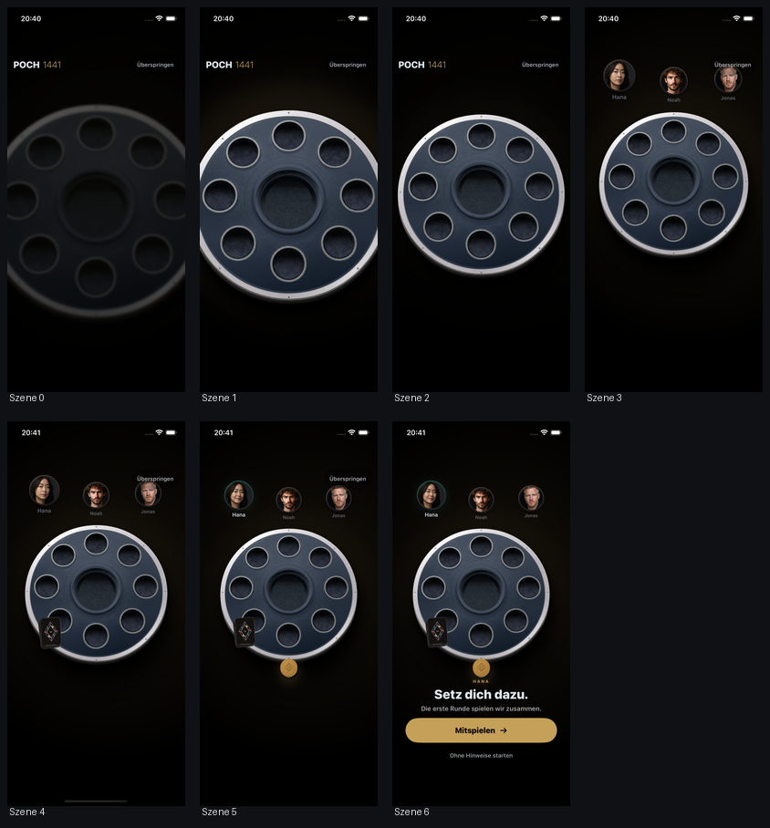
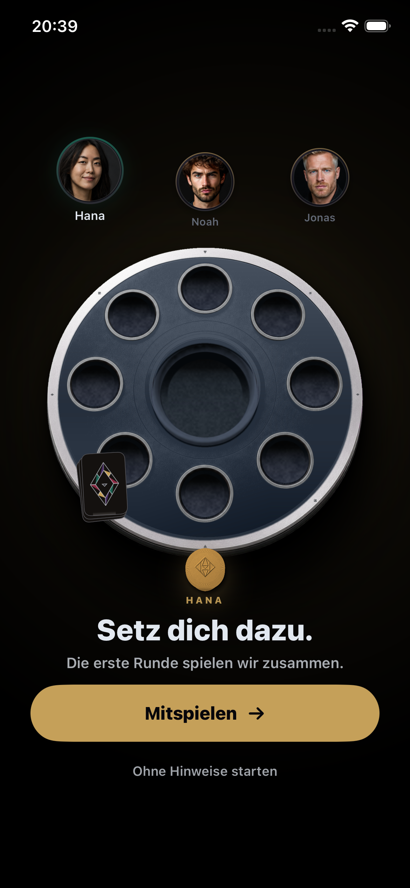
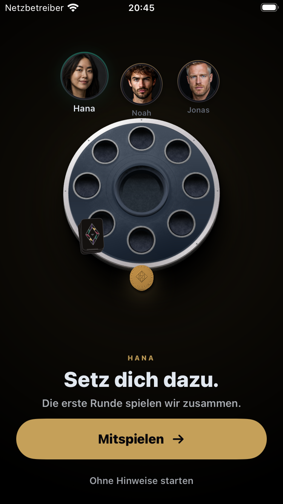
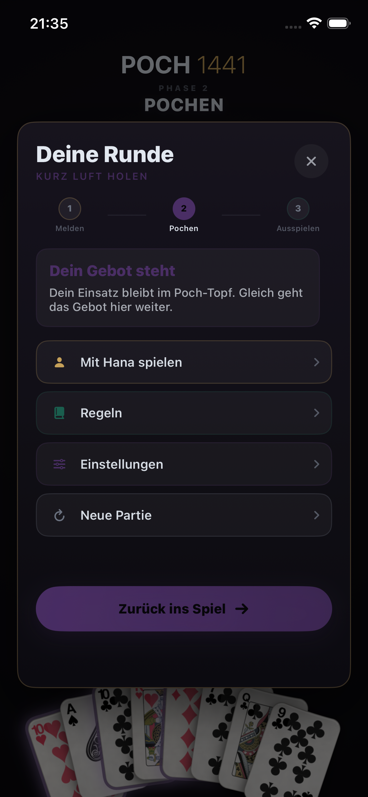
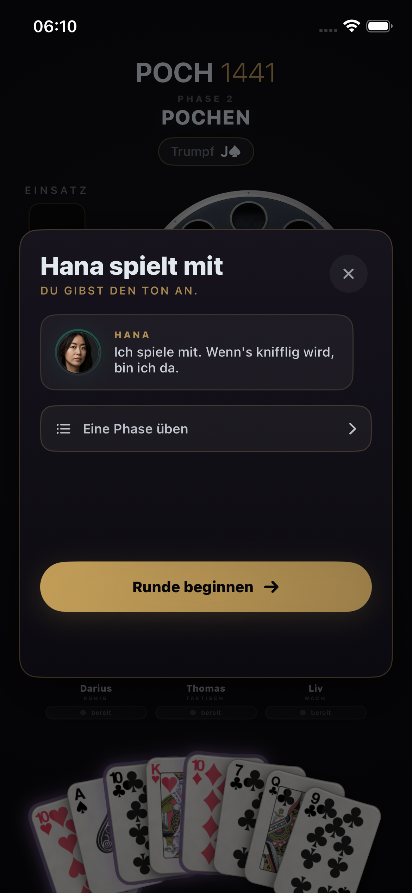
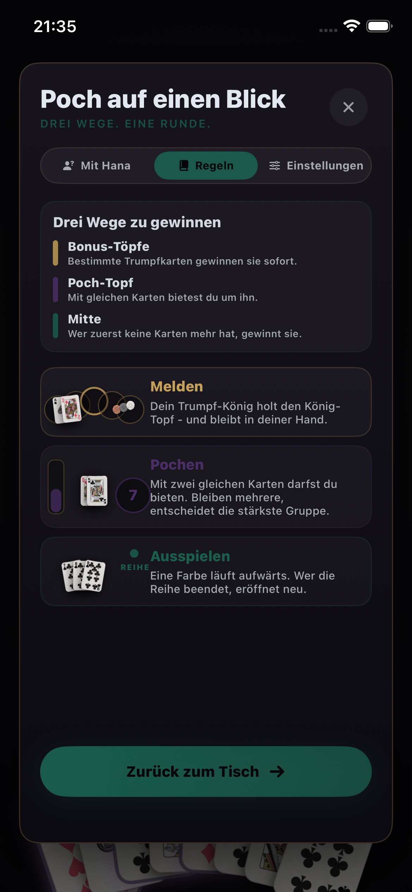
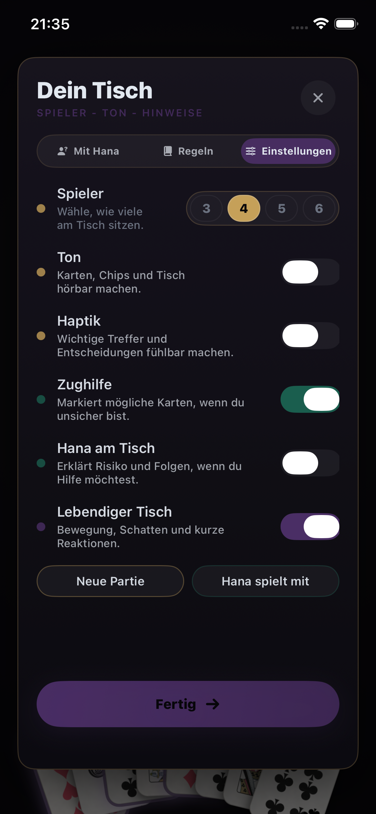

Melden
Gemeinsam die Töpfe füllen, verdeckte Hände entstehen sehen, Trumpf aufdecken und verstehen, warum der Trumpf-König sofort gewinnt.
Reviewfassung · 23. Juli 2026
Nicht nur verständlich. Menschlich, filmisch und so spannend, dass „Noch eine Runde“ die freiwillige nächste Handlung ist.
Der freie Platz
Die Kamera beginnt nah am dunklen Brett. Ein einziger Kontakt setzt den Tisch in Bewegung. Hana, Noah und Jonas nehmen zeitversetzt Platz, das Deck kommt an, und Hana schiebt einen Chip an den freien vierten Sitz. Erst dann erscheint Text.

HANA
Setz dich dazu.
Die erste Runde spielen wir zusammen.
Hauptaktion: „Mitspielen“ · Nebenaktion: „Ohne Hinweise starten“


Reduced Motion und VoiceOver: Die Kamerafolge entfällt. Menschen, Brett, Bedeutung und beide Aktionen stehen sofort ruhig bereit.
Drei Akte, eine Partie
Gemeinsam die Töpfe füllen, verdeckte Hände entstehen sehen, Trumpf aufdecken und verstehen, warum der Trumpf-König sofort gewinnt.
Die eigene Gruppe erkennen, zwischen 1 und 2 Chips wählen und erleben, dass der Einsatz im Gebot hält, aber die Karten den Showdown gewinnen.
Eine Reihe selbst öffnen, jede Folgekarte begründet sehen, das Ende der Reihe verstehen und die nächste Startkarte selbst wählen.
Wir füllen die Töpfe.
Jeder legt einen Chip in jeden Topf. So gibt es gleich etwas zu gewinnen. Zieh deinen ersten Chip in die Mitte.
Verdeckte Hände entstehen
Deine Karten siehst nur du. Bei Hana, Noah und Jonas bleiben die Werte verborgen.
Welche Farbe ist Trumpf?
Decke die Tischkarte auf. Sie bestimmt nur die Trumpffarbe und gehört zu keiner Hand.
Dein Trumpf-König trifft
Der König-Topf gehört dem König in Trumpf. Du hältst ihn - melde ihn jetzt. Er bleibt in deiner Hand.
Die Meldungen sind beendet
Du hast König und Hochzeit gewonnen. Andere Bonus-Töpfe bleiben liegen und wachsen. Jetzt wartet der Poch-Topf.
Deine Karten öffnen den Poch
[Gruppe · Rang] - damit darfst du pochen. Was Hana hält, bleibt bis zum Aufdecken ihr Geheimnis.
Wie mutig spielst du?
Der Einsatz entscheidet, wer dabeibleibt - nicht, wer gewinnt. Setze vorsichtig 1 Chip oder mache mit 2 Chips Druck.
Eröffne das Gebot
Mit 1 Chip forderst du den Tisch heraus. Die anderen können mitgehen, erhöhen oder passen.
Du gewinnst den Showdown
Einsätze halten euch im Spiel. [Gewinnergruppe] schlägt [zweite Gruppe]: Anzahl vor Rang.
DEINE ERSTE REIHE · LEGE [Karte]
[Karte] eröffnet die Reihe. Danach geht dieselbe Farbe Karte für Karte aufwärts.
WER HAT DIE NÄCHSTE KARTE?
[Name] legt [Karte], weil sie direkt auf [vorige Karte] folgt und dieselbe Farbe hat.
WÄHLE DEINE NEUE STARTKARTE
Du entscheidest selbst - alle [n] Karten in deiner Hand sind gültige Starts.
LETZTE KARTE
Du nimmst die Mitte. Jeder Gegner zahlt dir 1 Chip pro Restkarte - solange sein Vorrat reicht.
Der Schluss
Nicht schlecht für die erste Runde.
„Nächstes Mal ohne meine Tipps.“ Der [Topf]-Topf bleibt liegen und wächst. Hana will ihn zurück.
Hauptaktion: „Noch eine Runde“
Aktueller geprüfter Stand




Freigabedisziplin
Kein neuer TestFlight-Build und keine Produktionsintegration, bevor alle Pflichtgates grün sind.
Reviewfragen